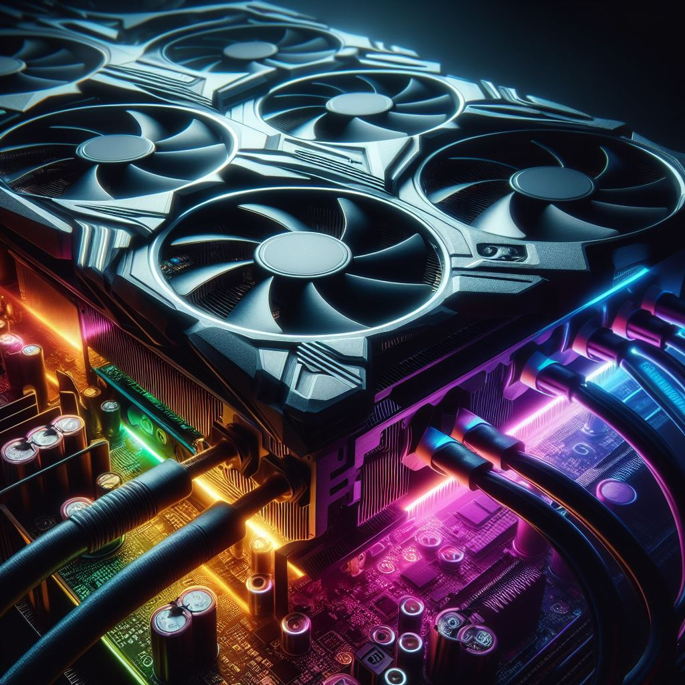

Nowa Karta Graficzna "Quantum XZ2000" od HyperTech Zdobywa Szczyty WydajnoÅ›ci! 🚀 HyperTech wprowadza rewolucyjną kartę graficzną Quantum XZ2000, obiecującą niesamowitą moc obliczeniową i wyjątkową jakość grafiki. Czy to konkurencja dla obecnych liderów rynku? 
Ubuntu 22.04.4 LTS – Aktualizacja z Kilku Drobiazgów i Wyższą Wydajnością! 🧠Najnowsza wersja Ubuntu, 22.04.4 LTS, przynosi szereg poprawek, zwiększając stabilność i szybkość działania systemu. Czy to jest już najbardziej optymalna wersja Ubuntu?
Legion 5 17imh05 Z Najnowszym Procesorem QuantumSpeed! ⚙️ Lenovo wypuszcza ulepszoną wersję Legion 5 17imh05 z nowym procesorem QuantumSpeed, obiecując jeszcze lepszą wydajność podczas grania i pracy. Czy to jest marzenie każdego gracza?
Nextcloud 18.0 – Nowe Funkcje i Bezpieczeństwo na Najwyższym Poziomie! 🔒 Najnowsza wersja Nextcloud, 18.0, wprowadza innowacyjne funkcje i skupia się na zabezpieczeniach. Czy to jest prawdziwy krok w kierunku bezpiecznej chmury?
Nowe Sercem Komputera – Procesor QuantumCore od AMD! 💻 AMD zaprezentowało QuantumCore, swoją najnowszą innowację w dziedzinie procesorów. Czy to oznacza rewolucję w świecie komputacji?